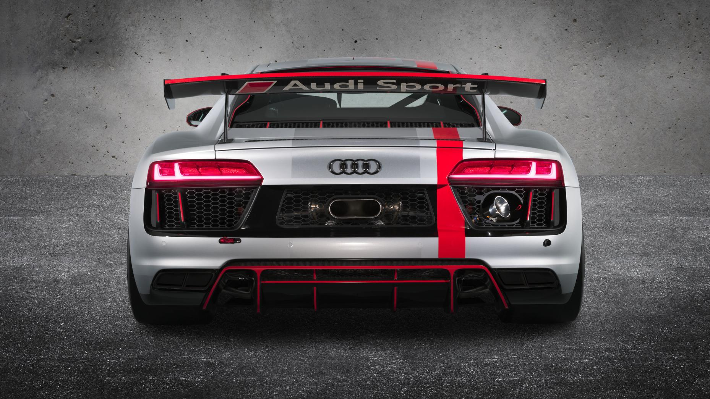

A hardcore Audi R8? God yes.
Hold your horses. This is no competitor for the Porsche 911 GT3, Mercedes AMG GT R or BMW M4 GTS. Audi says the R8 LMS GT4 is the “ideal race car for amateur campaigners” – a non-road-legal, off-the-shelf race car - like the Porsche Cayman GT4 Clubsport - which will be eligible for series like the British GT Championship and one-offs like the Nürburgring 24hrs.
“Will be” eligible? So it’s not finished?
Not quite. Audi is developing the GT4 LMS “in the course of the 2017 season before achieving a final homologation state and requesting approval for racing” in the second half of this year. Cars will be delivered to customers by the end of 2017.
How close is it to the regular R8?
Very. The GT4 shares 60 per cent of its components with the road-going car (the R8 GT3 car shares around 50 per cent of its parts with the normal R8), and will be built at the same factory in Germany.

Fast?
Yep, but competition rules mean it’s not as powerful as the road car. The same set of rules also prohibit all-wheel drive. So the 5.2-litre N/A V10 delivers up to 495bhp (the exact amount varies, and depends on Balance of Performance regulations), channelled to the rear wheels only via a seven-speed double-clutch gearbox and mechanical LSD. A different exhaust, ECU map and a restrictor plate are the only engine mods. A full rebuild is required after 20,000kms.
0-62mph is said to take under four seconds, and the top speed is in excess of 155mph. The dry weight is 1,460kg before ballast.
“Rebound and compression adjustable racing-specific dampers and springs, as well as adjustable stabilisers” have been added to the road car’s double-wishbone setup, the brakes are steel and equipped with the road car’s ABS system, and the steering is from the R8 GT3.
What’s been done to the body?
Well there’s a hatch in the roof for a swift rescue in the event of an accident, plus more aero. The bigger wing is supplemented by a different bonnet, dive planes and what looks like a more aggressive front bumper. Then there’s the exhaust, which now exits where you’d normally find the rear number plate. Inside much has been stripped away to save weight and to make room for the mandatory cage, seats and harnesses.
How much?
No clue yet, but the GT3 car is around €359,000 before tax, which is actually pretty reasonable. It’ll line-up somewhere between that and the €99,000 RS3 LMS.
Share this page:


Thanks for helping us!